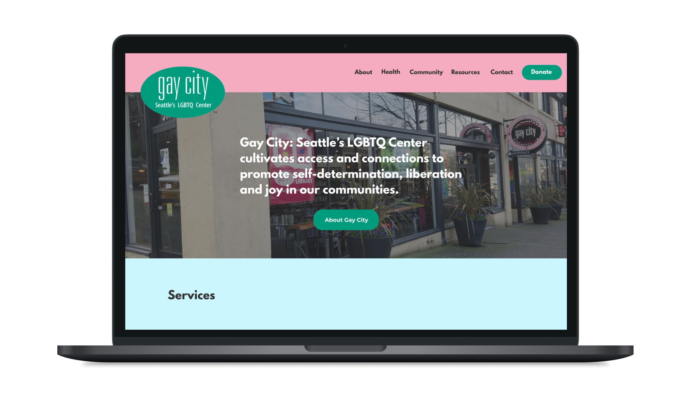

Gay City – Seattle's LGBTQ+ Community Center
Interaction • Research
Gay City
Background & Problem
Gay City is Seattle's definitive hub for LGBTQ individuals seeking affirming and responsive resources, wellness, and community. Gay City remains the leading HIV/STI tester in King County, home to several LGBTQ-affirming services, and provides access to several diverse resources.
The organization is also an active force in queer youth engagement and provides LGBTQ-centered trainings that address the needs of the most marginalized people within our community. As a queer person living in Seattle, I chose to assist Gay City due to their locality, unique place at the intersection of building queer and health education and services, and alignment of my values with theirs.
My Role & Objective
I took on a UX Design role in this 2 week design sprint to design a responsive website to inform users of Gay City's resources and help them book healthcare appointments seamlessly.
The Challenge
As a local non-profit as the website stands today, it has been long due for a revamping and has mainly be concerned with staying functional leading to a variety of user experience and overall design issues. Their main online services of informing the general public of community resources and making STI appointments were in need of a redesign.
Our goal was to know how Gay City can become accessible and user friendly to all audiences and what features or services are important so that we can streamline Gay City’s digital presence.
Identifying Issues
Through multiple rounds of workshops, UX sketching, and user journey mapping with sticky notes, we identified fundamental issues within the current version of Gay City. User pain-points included incoherent navigation and site structure. In addition, the build interface looked markedly different from the end-user search interface, making it harder for first time users to see the direct impact and value of their work.


Empathize
To remedy these problems we utilized secondary research of the existing site analytics, community mailing surveys, and one on one interviews to:
- Determine what online services of Gay City are the most helpful and important to users
- Understand what information the average user looks for when navigating Gay City
- Understand the user flow of Gay City’s scheduling services and mitigate any confusion

Define - Identifying the Scenario
To think keep features user-centered, I articulated Problem Statements and How Might We questions (HMW) based on the research. The design was centered around helping users find information about Gay City or schedule health checkups.
- How might we inform a LGBTQ+ youth about Gay City's mission?
- How might we make STI appointment scheduling easy and less intimidating for first time users?
- How might we make Gay City's mission and values come across through their digital presence?

Ideate - Simplifying the Process
I had many ideas of what could be on the website, so I narrowed down the most important features that would make a seamless online shopping experience into the project roadmap. From there, I also did an open card sort that helped me grouped features that intuitively went well together. This led to the creation of a site map. This organized categories in a clear way so that users could have an easy to navigate online shopping experience.
I spent time considering these two things, because I knew that if the website was hard to use, users would be less inclined to stay on the website. An easy to navigate website did not only benefit users, it also would be highly beneficial to Gay City to meet their business goals.
Build - Wireframing & Brand Identity
From the user flow, I built mid-fidelity wireframes to put all the features together. These wireframes show the screens that a user would encounter when they trying to find out more about Gay City or schedule a STI/HIV appointment at the center.
Logo & Style Tile
I wanted to bring out themes I gathered from Gay City: cultivating access and connections to promote self-determination, liberation and joy in our communities. They use a heavy shade of green to emphasize these values and bring a health-focused impact to the community. To start, I created a style tile to give a visual representation of Gay City.
Final UI Screens
Then, I created the other UI screens and created my high-fidelity prototype. Here is a sample of my final UI screens.
Testing - Revisions & Reflections
Once I had my high-fidelity prototype working, I recruited 5 participants to test the prototype and observe how they completed each task. From the results and notes I gathered I created an affinity map to prioritize revisions and discover common patterns and pain points.
Key Takeaways & Future Plans
I managed to take Gay City's current status as a local community resource and incorporate it's mission and values into more aligned values. It also taught me the importance of collaboration with a client and how to work within the constraints set forth by them.
Our collaborative work led to improved time and cost savings and reduced employee workloads. With the client, we were able to come together to create a better product and streamlined process for making appointments online.
© Camille Nibungco 2021